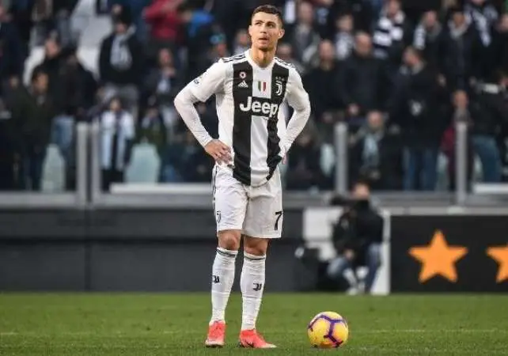

Most Popular footballer in the World👇

Christiano Ronaldo
A Portuguese professional footballer Cristiano Ronaldo plays as a forward for the English Premier League club Manchester United. He is one of the most popular soccer players and one of the most handsome footballers of all time. He won FIFA Ballon d’Or five times including other awards like FIFA World Player of the Year, European Golden Shoe, and PFA Players’ Player of the Year.
CR7 is one of those players who believe in hard work and being the best on the pitch or off the pitch. According to a report published last year, he earns more money from Instagram sponsorship deals than he does from wages with Juventus. The giant has fanatical fans around the world. People are going crazy just to see him only once.
And why not, Cristiano Ronaldo is a dashing, handsome, and most successful player in the world. CR7 has 122 million followers on Facebook, 241 million followers on Instagram, and 87.8 million followers on Twitter.
He is one of the most-followed people on all social media accounts. Football lovers just follow what he says or does. For sure he deserves 1st spot on the 10 most popular soccer players in the world right now.